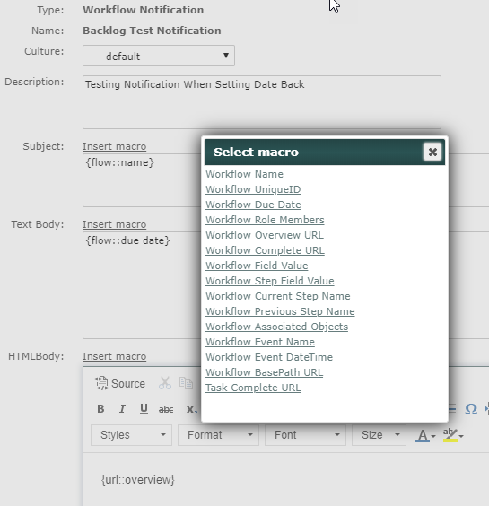
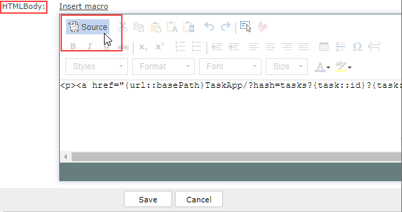

Notification Templates define the content of the notification messages sent for workflows or tasks.
To use sample notification templates for Apps and standard tasks, see Sample Email Notifications for Apps and Tasks.
You can create different versions of a notification in different languages. Users will receive the version of the notification that matches their Culture selection set in their profiles.
To view Notification Templates:
From the menu, select Setup > Notification under Templates.
Existing Notification Templates are displayed. The # Ref column indicates the number of policies that use that template.
You can search for Notification Templates in the Search pane by name (full or partial string), date created, description or type.
To view the content of the notification template, right click a template and select View.
To edit a Notification Template:
Right click the template and select Edit.
If you edit a Notification Template, the changes will apply to all notifications generated in the future where the associated policy applies.
To create a new Notification Template:
In Notification Templates Manager, select New Notification Template.
You can also use the Create link next to the Notification Template field on the Workflow Policy or Task Notification create/edit page.
To edit an existing template, in Notifications Template Manager, right click the template and choose Edit.
Enter a name for the template and an optional description.
Enter a Subject line.
You may use macros in both the subject and the message body.

In order to format a link with link text rather than the generated string, you will need to use the Source editor.
For the HTML message body, click Source to format the message in a text editor using HTML code.

Click Save and Confirm to save the template.
To create notification versions in other languages:
Then, select the Culture dropdown and select the culture version you want to create.
The form fields will be blank. (The default version is saved, without needing to click Save yet.)
Complete the fields for that language version.
You can continue to create more versions for any of the supported cultures.
Add to Calendar Option for Tasks:
You can add a button for users to click to add a task to their calendar. (This works for tasks only, not workflow notifications.) The option is already included in the Standard Task Notification. To add it to your own notification template, copy and paste the following code into the Source view of the task notification:
<p><a href="https://api.enviance.com/ver2/TaskService.svc/tasks/{task::id}/ical"><span style="font-size: 14px; font-family: Arial, Helvetica, sans-serif; color: #6a6a6a"><img alt="logo" border="0" height="15" src="http://assets.enviance.com/repository/application/notificationtemplate/images/icon_calendar.png" width="15" /> <u>Add to my Calendar</u></span></a></p>
Available macro substitutions are defined in the following table.
Check the source code to be sure that all links are properly constructed.
Named values for the macros Workflow Field Value, Workflow Step Field Value, and Workflow Role Members must be valid for the workflow type in which the Notification Template is used. All other macros are generic for any workflow.
|
Macro |
Syntax |
Output | Comments |
| Workflow Notification | |||
|
Workflow Name |
{flow::name} |
Inserts name of workflow instance. | |
|
Workflow UniqueID |
{flow::unique id} |
Inserts unique ID of workflow in system. | |
|
Workflow Due Date |
{flow::due date} |
Inserts due date for workflow. | |
|
Workflow Role Members |
{role::[role name]} |
Inserts names of users or groups associated with named role. Substitute name of role in macro (spaces allowed). Do not include square brackets. Role name must be valid for the workflow type. | |
|
Workflow Overview URL |
{url::overview} |
Inserts link to Workflow Overview. To use link text in place of the full url, go to HTML view and insert:
<a href="{url::overview}">link text</a> | |
|
Workflow Complete URL
| {url::complete} |
Inserts link to current step completion page. To use link text in place of the full url, go to HTML view and insert: <a href="{url::complete}">link text</a> | When using this macro in the systems that don’t utilize SSO, you will be directed to the default login page and asked for the credentials. When using this macro in the systems that utilize SSO and custom login page, you will be directed to the custom login page. Please contact your sales representative for more information on the custom login page configuration. |
|
Workflow Complete URL (via default Login)
|
{url::completeViaDefaultLogin}
|
Inserts link to current step completion page. To use link text in place of the full url, go to HTML view and insert: <a href="{url::completeViaDefaultLogin">link text</a> | When using this macro, you will be directed to the default login page. |
|
Workflow Field Value | {field::[field name]} |
Inserts current value of named field (in currently active step). Field must be present in the workflow form. Insert name of field in macro (exactly as named, with spaces allowed). Do not include square brackets.Field name must be valid for the workflow type. | |
|
Workflow Step Field Value |
{field::[step name]/[field name]} |
Inserts current value of named field in latest occurrence of the specified step. Insert step name and field name in macro (exactly as named; spaces allowed.) Do not include square brackets. Step name and field name must be valid for the workflow type. | |
|
Workflow Current Step Name |
{step::name} |
Inserts name of currently active step in workflow. | |
|
Workflow Previous Step Name |
{priorstep::name} |
Inserts name of previous step in workflow. | |
|
Workflow Associated Objects |
{flow::object} |
Inserts name of parent object associated with workflow. | |
|
Workflow Event Name |
{flow::event type} |
Inserts name of the workflow event that triggered the notification (i.e., Assignment, Completion, Past Due, etc.) | |
|
Workflow Event DateTime |
{flow::event date} |
Inserts date of the workflow event that triggered the notification | |
| Workflow BasePath URL | {url::basePath} |
Base url is used to create deep links to system components, including Apps. The macro resolves to the following string: https://go.enviance.com/goto/SystemID/ | |
| Task Complete URL | {task::complete url} | Inserts link to associated task completion page. | |
| Task Notification | |||
| Task Name | {task::name} | Inserts name of task. | |
| Task ID | {task::id} | Inserts task unique ID. | |
| Task Due Date | {task::due date} | Inserts task due date | |
| Task Due Date Param | {task::due date param} | Inserts task due date, url encoded (required when building a URL). (Use this version when providing a link to the Task Completion App.) | |
| Task Assignor | {task::assignor} | Inserts name of Task Assignor. | |
| Task Assignees | {task::assignees} | Inserts names of Task Assignees | |
| Task Complete URL | {url::complete} |
Inserts link to task completion page. To use link text in place of the full url, go to HTML view and insert: <a href="{url::complete}">link text</a> | |
| Task View URL | {url::view} |
Inserts link to Task View page. To use link text in place of the full url, go to HTML view and insert: <a href="{url::view}">link text</a> | |
| Task Overall Completion Status | {task::completion status} | Inserts overall completion percentage for task. | |
| Task Description | {task::description} | Inserts task description. | |
| Task Comments | {task::comments} | Inserts task comments. | |
| Task Notification Comments | {task::notification comments} | Inserts task notification comments. | |
| Task Total Cost to Complete | {task::total cost} | Inserts value of Total Cost to Complete field for task. | |
| Task Total Time to Complete | {task::total time} | Inserts value of Total Time to Complete field for task. | |
| Task Associated Objects | {task::objects} | Inserts names of associated objects. | |
| Recipient Email | {recipient::email} | Inserts email address for all recipients. | |
| Task BasePath URL | {url:basePath} |
Base url is used to create deep links to system components, including Apps. **Use this construct to link to the Task Completion App. See Link to the Task Completion App for Email Notification. The macro resolves to the following string: https://go.enviance.com/goto/SystemID/ | |
| Workflow Complete URL | {workflow::complete url} | Inserts link associated workflow current step completion page. | |